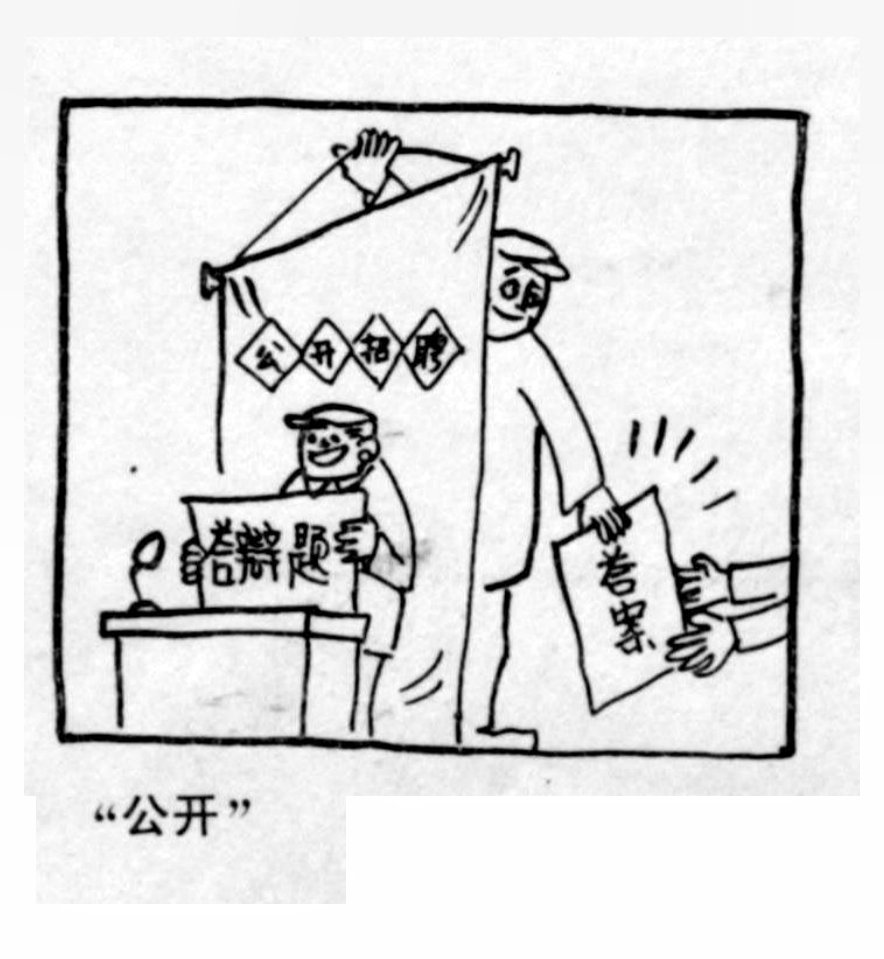

蒋思忠供稿 《人事》1989年第11期（总第50期），封三
“公开”
“Open”
- Text in the drawing
- 公开招聘 / 答辩题 / 答案
Open recruitment / Oral-examination questions / Answers - Description
- Under a banner for “open recruitment,” an examiner reads out the oral-exam questions from the lectern — while behind the curtain a colleague hands the answers to someone's waiting hands.
- Note
- 公开招聘, “open recruitment” by examination, was introduced for cadre posts in the late 1980s. 供稿 means the drawings were “supplied by” Jiang Sizhong, who drew 地下工作者 in 1988 no. 12.
- Artist
- Jiang Sizhong 蒋思忠 (supplied)
- Published in
- 《人事》1989年第11期（总第50期）, inside back cover
- Themes
- Connections (guanxi) · Reform and its implementation · Paperwork and documents

Cite
Jiang Sizhong, ““公开”” [“Open”], Renshi (Personnel) 《人事》, 1989, no. 11, inside back cover.